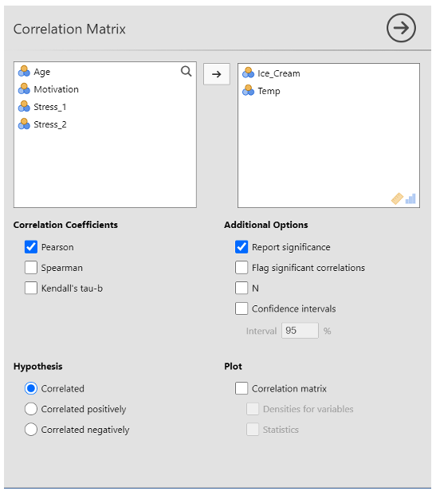
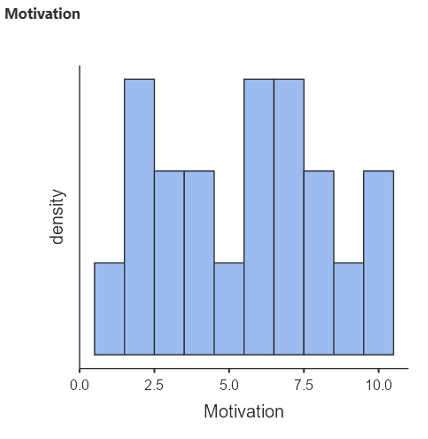

Week 9 : Correlations, graphs and exporting
Learning Objectives
| Quantitative Methods | |
|---|---|
| Hypothesis testing | |
| Confidence intervals and critical values | |
| Measures of skew and normality |
| Data Skills | |
|---|---|
| Working with the Jamovi editor | |
| Performing a correlation in Jamovi | |
| Plot basic graphs in Jamovi | |
| Report different statistical tests | |
| Make decisions about which statistical test to use based on hypotheses and data |
| Open Science | |
|---|---|
| Working with openly available research data | |
| Copy/paste Jamovi output into other applications |
Today you will be using Jamovi to perform a correlational analysis.
Hypothesis Testing
When we want to test a research hypothesis, we obtain random samples of behaviour/data. We set up a null hypothesis H0: that the samples were drawn from populations with the same means (so that there will be no difference between them). We then obtain some samples and calculate the differences between the means of these samples, under the assumption that H0 is true (i.e. we obtained these means when the population means are equal).
- EXAMPLE: We want to test whether students drink more than the general population. To do this we collect data on the number of drinks per person in a club in one night, for two groups: students and general population. We then calculate the differences in the mean number of drinks for each of our groups. We assume that these means will be equal (null hypothesis). We are looking to disprove this hypothesis by finding differences in the means.
We then calculate the probability of getting a mean difference that is at least as large as the one we actually obtained between the means of our samples. This probability is our confidence interval. With a t-test, for example, we usually aim to say that we are 95% confident that our data were drawn from two populations with different means (i.e. there is a significant difference between the populations). To do this, we use the critical value – usually p<0.05. In this case, we are saying that the probability that we would obtain the significant difference in data that we did would occur less than 5% or 5 in 100 times, if the null were true! That’s a very small chance. We can also use smaller, stricter p values like p<0.01 (we would see the differences we found less than 1% of the time, if the null were true).
- EXAMPLE: We calculate the differences in the mean number of drinks for our student and general population groups. We find that students drink on average 2.5 more drinks than the general population, and that this difference is significant. We use a critical value of 5% and a confidence interval of 95% (these add up to 100%). That is, we can say that we are 95% confident that our data were drawn from two populations that actually have different means, and this conclusion will only be a mistake (due to chance) 5% of the time.
If the data do not lead us to reject the null hypothesis, the interpretation is more problematic – do we “accept” the null, or “retain” it, or just withhold judgement”?
- We can definitely never claim to have “proved” the null hypothesis (as you cannot 100% prove a null statement)! A non-significant result is an inconclusive one – we have insufficient data to choose which hypothesis (null or alternative) is the most accurate.
One- and two-tailed tests
If we are going to reject either the lowest or highest 5%, then we use a one-tailed (or directional) test
If we want to conduct a two-tailed, non-directional test of significance, then to use an overall critical value of 5% we need to reject both the lowest and highest 2.5%, making 5% altogether
If you are certain of the direction of your effect, you can use a one-tailed test – but generally, we use two-tailed tests (as it’s rare that we know what direction our effect will be in!)
1. The Dataset
We will be exploring the dataset correlation data that you can find on the CANVAS page under Week 9 of the computer labs folder of Research Methods A
There are five variables in the dataset
- Age
- Ice_Cream - number of ice creams sold
- Temp - temperature
- Motivation
- Stress - measured at two time points
2. Pearson’s Correlation Coefficent
The Pearson’s Product Moment correlation is a parametric test that measures the size and significance of a relationship between two variables. In this test, the experimental data must meet certain assumptions of parametric tests. Some of these assumptions include data continuity and a normal distribution. We will discuss how to assess whether the distribution is normal in the next semester. For now, let’s assume it is normal.
We will correlate the variables ‘Temp’ (temperature) and ‘Ice_Cream’ (number of ice creams sold). There are 20 days where the two variables were recorded. These are represented by the rows in the ‘data view’.
We’ll be working with Jamovi throughout this practical.
Working on campus? You can open Jamovi through AppsAnywhere, either open the desktop application through the start menu on a campus computer or Birmingham’s AppsAnywhere website.
Take a look at these frequently asked questions or ask your tutor if you get stuck.
Working on your own computer? You can install Jamovi (for free!) folling these instructions. Install the ‘Desktop’ application - not the ‘Cloud’ version.
Let’s start by loading the dataset into Jamovi. You can download the file Correlation_data.xlsx from canvas.
3. Exercises
Now it is time for you to explore the data. If you are unsure about any of these, please talk to the staff in your computer practical session.
Task 1
- To correlate the two variables click on ‘Analysis’ from the top tabs > Regression > Correlation Matrix

Transfer ‘Ice_Cream’ and ‘Temp’ to the variables box by clicking them and pressing on the arrow button, double-clicking, or dragging them over to the box.
For this example, make sure that the ‘Pearson’ and ‘Report significance’ boxes are ticked. Note that Pearson is the version we use if our data meet parametric assumptions (e.g. interval or scale data, normal distribution, free from outliers etc.). If your data didn’t meet parametric assumptions, you would use Spearman instead because this test is more resilient to violations of the assumptions.
Select ‘correlated’ under hypothesis
Task 1 - Results
Use the correlation output to complete this statement reporting the results of the correlation. Fill in the spaces provided.
The correlation between temperature and the number of ice cream sold over 20 days is (r () = , p < ). There were observations.
The correlation matrix…
What does this result tell you? Have a think about how you would interpret the result?
Example of how to report these results
“A Pearson’s correlation was conducted to see if there was a significant relationship between temperature and the number of ice creams sold. This revealed that there was a very strong significant positive relationship between temperature and ice cream sales, r (18)= .893, p < .001. Specifically, as temperatures increased, so too did ice cream scales. Therefore, we can accept the hypothesis that there would be a significant positive relationship between temperature and ice cream scales.”
Note, a correlation can be positive (like this one was) or negative (e.g. the r value could have read -.893 instead). If it had been negative, this would have meant that as temperature increased, ice cream sales decreased. It is very important to get the direction of the relationship right because if you get it wrong it completely changes the findings!
It is generally accepted that r values can be interpreted in the following ways (these numbers can be either positive or negative!): 0-0.19 = Very weak, 0.20–0.39 = Weak, 0.40–0.59 = Moderate, 0.60–0.79 = Strong, 0.80–1 = Very strong. It is extremely uncommon to have an r value of 1 because this means it is a perfect correlation (e.g. when you correlate temperature with itself because they are the same).
Task 2 - Create a graphical representation in Jamovi
This correlation can be illustrated graphically. This eases the understanding of the relationship between the variables. We can illustrate the relationship using the Jamovi Scatterplot function.
- Click on Analyse > Exploration > Scatterplot
Move Ice_Cream and Temp across
Click on linear under ‘Regression Line’
A scatterplot should appear in the window to the right
You can clearly see that as the temperature increases, the number of ice cream sold also raises. We know that this relationship is significant from the results of the Pearson’s Correlation.
Task 3 - Histograms
A histogram is a graph showing the frequency of different scores. Histograms are frequently used in psychological research. Histograms are useful to check whether the data is normally distributed.
- Go to Exploration > Descriptives > to generate a basic histogram of the MOTIVATION variable. Transfer MOTIVATION to the Variables box, remember to tick the Histogram box under ‘Histograms’ – A Histogram should appear in the window to the right

- Do the same for Stress_1
Task 4 - Copy/paste Jamovi results into other applications
You need to know how to copy results of statistical analyses into the appendices of reports in the future. Note that the only tables or figures which should ever go in the main part of the report are ones which help to illustrate your argument and they must fully adhere to APA format.
It is also never enough to just say ‘see table 1’. You have to interpret what tables and figures show in the text. For example, “Figure 1 shows a scatterplot depicting the correlation between temperature and ice cream sales”.
Copying a graph or table into a Word document
- Click on the bottom right search icon
- Search for Snipping tool
- Click on ‘New’ top left
- Highlight the area of the graph or table that you want to copy
- Click ‘EDIT’ and scroll down to copy
- Click “Paste” in the Word Document
More information about APA formatting can be found here
Task 5 - Consolidate your knowledge: Descriptive Statistics
Download and open the JAMOVI data file stroke_survival_data that you can find on Canvas. We want to generate some descriptive statistics on this dataset. This is a real dataset from several hospitals.
Firstly, make sure all the variables are set at the right measurement level
- Click on the DATA tab
- Click on ‘Setup’
- Click on each individual variable name on the data to check the details.
From the ‘Analysis’ tab click on ‘Exploration’ and then ‘Descriptives’ and then
Fill out the tables in the question box below. You will take two continuous variables and two categorical variables at a time and run some descriptive statistics.
- HINT: Enter a nominal variable into the “Split by” box. This will split your output by the categories within these variables
Make sure your output includes a histogram.
You will see your results automatically in the window to the right.
Using the results you just generated, fill out the following table:
| Variable Name | Factors | Number of data points (N) | Mean (M or x̅) |
|---|---|---|---|
| Age (years) | Male | ||
| Female | |||
| Age (years) | Diabetic | ||
| Non-diabetic | |||
| Income | Male | ||
| Female | |||
| Income | Diabetic | ||
| Non-diabetic |
Using the results you just generated, fill out the following table:
| Variable Name | Factors | Number of data points (N) | Mean (M or x̅) |
|---|---|---|---|
| Age (years) | Smoker | ||
| Non-smoker | |||
| Age (years) | Obese | ||
| Not obese | |||
| Cost | Smoker | ||
| Non-smoker | |||
| Cost | Obese | ||
| Not obese |
Task 6 - Consolidate your knowledge: Analysis Practice!
- Run correlations between age and income; income and cost; and age and cost
The correlation between age and income is (r () = , p = ). There were observations.
The correlation between income and cost is (r () = , p = ). There were observations.
The correlation between age and cost is (r () = , p < ). There were observations.
Task 7 - Consolidate your knowledge: More Analysis Practice!
Open the survey_data file. This is a real dataset from a psychological study.
Look over the dataset. Try to work out what has been recorded. What is the dataset exploring?
Explore the variables ‘toptim’ and ‘tlifesat’ using Descriptives, split by both the sex and smoke variable, and fill out the information below.
Using the results you just generated, fill out the following table:
| Variable Name | Factors | Number of data points (N) | Mean (M or x̅) |
|---|---|---|---|
| toptim | Male | ||
| Female | |||
| toptim | Smoker | ||
| Non-smoker | |||
| tlifesat | Male | ||
| Female | |||
| tlifesat | Smoker | ||
| Non-smoker |
- Now run a correlation bewteen ‘toptim’ and ‘tlifesat’. Report your results in the question box below.
The correlation between optimism and life satisfaction is (r () = , p < ). There were observations.
The results indicate a correlation between optimism and life satisfaction. This means that as optimism , life satisfaction .
- Explore the rest of the data using descriptives and correlations. This time you can use variables of your choice. Choose some variables that you find interesting and think about what your results show you. What interpretations can you make from your results?
Task 8 - Reorganise the data into a new Jamovi sheet
Now we will re-organise the data into a new JAMOVI sheet so we can compare scores at a later date based on a categorical variable of your choice.
- Choose a categorical variable that you are interested in
- E.g. You might want to know, is there a difference in optimism scores (scale) between smokers and non-smokers (categorical)?
- Sort the dataset by this variable
- HINT: Use the “Split By” function to compare groups. Your data will now be organised by this categorical variable.
- Choose three non-categorical variables of interest. Copy all of the data from each one of these variable columns for ONE of your categories (e.g. female) into the new spreadsheet.
- E.g. if you’re interested in optimism scores, copy the data for optimism in females into a new variable column
- Give your new variables appropriate names, e.g. if you copied the “Total Optimism” scores for females, rename the variable “Tot_Opt_F”, for example
- Repeat for your other category/categories (e.g. copy all the male data, and rename the variables)
- Now you have re-organised your data…